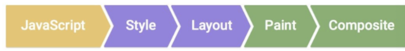

CSS 기초
-
CSS란
- Cascading Style Sheet
- 마치 폭포수처럼 이어져 내리는
요소들의 디자인 셋팅을 하는 언어
- 마치 세프가 주문의 요구사항을 보고
요리하는것 처럼 디자인옵션을 브라우저에
display 하기전에 셋업하도록 명령한다!
-
적용방식
1) 인라인방식: 태그에 style속성으로 작성
2) 인터널방식: html문서에 style요소 내부에 작성
3) 익스터널방식: .css확장자의 문서를 html에 link방식으로 삽입
-
기본문법:
선택자 {속성명:값;}
-
선택자의 종류
1) 타입선택자: 요소명
2) 자손선택자: 띄어쓰기
3) 아이디선택자: #
4) 클래스선택자: .
5) 직계자식선택자: >
6) 그룹선택자: ,
7) 종속선택자: 태그명+아이디/클래스선택자
8) 속성선택자: []
9) 형제선택자: +
예) li+li , tr+tr 앞에 다른형제가 있는 요소를 선택함
10) 다중형제선택자: ~
예) li:nth-child(4)~li -> 4번째 li이후 모든 형제선택
-
가상클래스
- 마치 클래스를 지정하여 준것 같다하여 가상클래스라고 함
- 가상클래스는 콜론(:)하나를 사용함!
1) :hover -> 마우스오버시 디자인설정함
2) 자식 중 같은 종류의 타입만 선택하는 가상클래스
:first-child
:last-child
:nth-child(n)
-> 숫자n은 1부터!, 짝수는 even, 홀수는 odd
-
CSS 적용 우선순위
인라인 > id > class > type
- 만약 !important를 값 뒤에 쓰면
가장 우선순위로 적용됨!(신중히 쓸것)
위 방식에서 적용 우선순위는 점수로 생각하면 이해가 쉽다
인라인 : 1000점, id : 100점, class : 10점, element : 1점
css에서 선택자로 .클래스명 태그명{} 이렇게 작성시 클래스 10점에 태그 1점 해서 11점이다.
위와같이 선택시 일반적으로 클래스로 선택한것보다는 우선순위가 올라간다고 생각하면 된다.
-
CSS 변수
CSS 변수는 바(-) 2개를 붙여 표시합니다 --red: #a00;
"--red" 변수명에 "#a00" 이라는 속성 값이 적용된 것입니다.
.content{ --newcolor: #000; } 이렇게 변수를 선언했다면 content라는 클래스의 하위 요소에서만
해당 변수를 사용 할 수 있습니다.
전역으로 사용하기 위한 변수(들)은 다음과 같이 ":root" 가상 클래스에 정의합니다.
:root{ --red: #a00; --dark: #404040; --light: #c0c0c0; }
변수의 사용
선언한 CSS 변수를 사용시 변수 값을 적용할 속성 값 위치에 "var()"로 변수명을 감싸서 표시하면 됩니다.
color: var(--red);
자바스크립트에서 변수의 접근
let theme = document.querySelector(':root');
let styles = getComputedStyle(theme);
console.log(styles.getPropertyValue('--hover')); // 변수 값 얻기
theme.style.setProperty('--hover', 'green'); // 변수 값 변경
단 자바스크립트로 변수를 제어시 html태그에 인라인 형식으로 직접 적용되기 때문에 우선순위를 기억할 것
-
CSSOM (CSS Object Model)
HTML과 마찬가지로 CSS도 브라우저가 이해할 수 있는 형식으로 변환해야 합니다.
HTML 마크업 내에 직접(인라인) 스타일을 선언하지 않고 CSS와 HTML을 별도로
유지하면 콘텐츠와 디자인을 별도의 항목으로 처리할 수 있습니다.
CSS 객체 모델은 브라우저가 DOM을 생성하는 프로세스와 같습니다.
따라서 HTML 대신 CSS에 대해 DOM 프로세스를 진행하며 CSSOM(CSS Object Mode)도
트리 구조를 갖습니다.

CSSOM이 트리 구조를 갖게 되면서 cascading 룰을 갖고 스타일을 세분화합니다.
DOM과 CSSOM은 독립적인 데이터 구조입니다
-
CSS 랜더링 순서**
브라우저에서 html파싱 및 dom트리를 형성하고 css도 파싱 후 cssom을 형성하여 렌더링 트리를 형성한다
렌더링 트리에서 레이아웃을 실행하여 각 노드의 기하학적 형태를 계산한다.
레이아웃 단계
- 레이아웃 단계에서 노드의 정확한 위치와 크기를 계산한다.
- 노드의 정확한 크기와 위치를 파악하기 위해 루트부터 노드를 순회하면서 계산하고,
레이아웃 결과로 각 노드의 위치와 크기를 픽셀 값으로 렌더트리에 반영한다.(ex: % -> px)
개별 노드를 화면에 페인트한다
페인트 단계
픽셀을 채우는 프로세스로써 텍스트 색상, 이미지, border, shadow 등 요소의 시작적인 부분을 그리는 작업이 포함된다.
- 이전 레이아웃 단계에서 계산된 값을 이용해 렌더트리의 각 노드를 화면상의 실제 픽셀로 변환되는데 페인팅 단계에서는
CSS 속성(색상, 투명도 등)을 적용한다.
- 픽셀로 변환된 결과는 개별 레이어로 관리된다.
합성 & 렌더 (composite)
composite
페이지가 정확히 렌더링되려면 정확한 순서로 화면을 그려야한다.
- 페인트 단계에서 생성된 레이어를 합성하여 스크린을 업데이트하고 합성과 렌더링이 끝나면 화면에서 웹 페이지를 볼 수 있다.
레이아웃과 리페인트
렌더트리는 자바스크립트에 의해 DOM 트리, CSSOM 트리가 변경될 때 다시 재구성된다.
스타일 -> 레이아웃 -> 페인트 -> 합성을 렌더링이라고 하고 상황에 따라 반복하여 발생할 수 있다
DOM이 추가, 삭제되거나 높이, 넓이, 위치를 주는 CSS 속성값이 변경되는 경우 렌더트리가 재구된다.
(배경색, 폰트색, 텍스트 데코레이션)레이아웃 과정을 건너뛰고 페인트부터 수행하는데 이를 리페인트.
레이아웃부터 이후 과정을 수행하는 것을 레이아웃 또는 리플로우라고 한다.